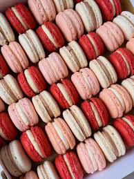
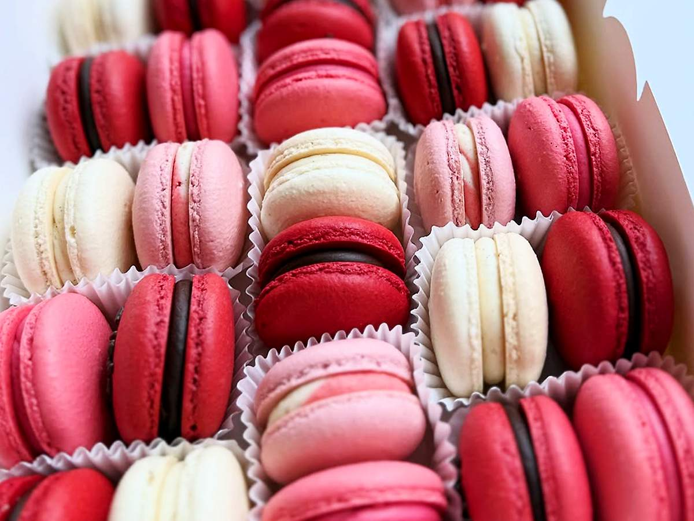
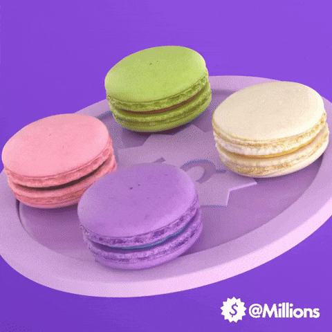

Origem
A história dos macarons começa na Itália, no século VIII. Sim, você leu certo – os macarons têm uma linhagem que remonta a mais de 1.000 anos! No início, eles eram conhecidos como “maccherones” ou “maccarones” e eram feitos de uma mistura de amêndoas moídas, açúcar e claras de ovos. Essa receita inicial tinha muito em comum com o que hoje chamamos de macaron. E foi implementado na França apenas no século XVI.

Criação da Mararon
A criação de nossa marca surgiu no Brasil em meados dos anos 2000, com o intuito de trazer uma experiência aconchegante tanto nos dias melancólicos quanto para os dias felizes. Se você também quiser vivenciar essa experiência, Peça Já!

Processo de criação
A Mararon trabalha em prol a exelência na criação dos deliciosos macarons. Os macarons passam por todos os processo com grande cuidado, mesmo nos mínimos detalhes. A higiene é umas das coisas que mais valorizamos na fabricação para que o consumidor possa saborear sem preocupações. Por último, o que mais importa é podermos deixar cada dia mais pessoas felizes!
